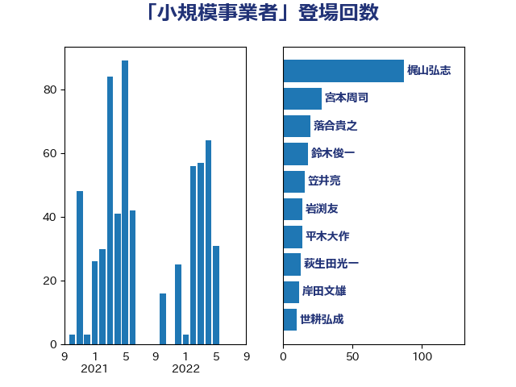

単語「小規模事業者」

| 梶山弘志 | 自由民主党 | 87 回 |
| 宮本周司 | 自由民主党 | 28 回 |
| 落合貴之 | 立憲民主党 | 20 回 |
| 鈴木俊一 | 自由民主党 | 18 回 |
| 笠井亮 | 日本共産党 | 16 回 |
| 岩渕友 | 日本共産党 | 14 回 |
| 平木大作 | 公明党 | 14 回 |
| 萩生田光一 | 自由民主党 | 13 回 |
| 岸田文雄 | 自由民主党 | 12 回 |
| 世耕弘成 | 自由民主党 | 10 回 |
| 渡辺猛之 | 自由民主党 | 10 回 |
| 菅義偉 | 自由民主党 | 10 回 |
| 佐藤啓 | 自由民主党 | 8 回 |
| 吉川ゆうみ | 自由民主党 | 8 回 |
| 北神圭朗 | 無所属 | 6 回 |
| 三浦信祐 | 公明党 | 5 回 |
| 塩田博昭 | 公明党 | 5 回 |
| 宮本徹 | 日本共産党 | 5 回 |
| 岡本三成 | 公明党 | 5 回 |
| 田嶋要 | 立憲民主党 | 5 回 |
| 中野英幸 | 自由民主党 | 4 回 |
| 大家敏志 | 自由民主党 | 4 回 |
| 本村伸子 | 日本共産党 | 4 回 |
| 石井章 | 日本維新の会 | 4 回 |
| 福田達夫 | 自由民主党 | 4 回 |
| 角田秀穂 | 公明党 | 4 回 |
| 赤澤亮正 | 自由民主党 | 4 回 |
| ながえ孝子 | 無所属 | 3 回 |
| 小林鷹之 | 自由民主党 | 3 回 |
| 山田美樹 | 自由民主党 | 3 回 |
| 枝野幸男 | 立憲民主党 | 3 回 |
| 森本真治 | 立憲民主党 | 3 回 |
| 浅野哲 | 国民民主党 | 3 回 |
| 西村康稔 | 自由民主党 | 3 回 |
| 長友慎治 | 国民民主党 | 3 回 |
| 長坂康正 | 自由民主党 | 3 回 |
| 長谷川岳 | 自由民主党 | 3 回 |
| 鬼木誠 | 立憲民主党 | 3 回 |
| 三原じゅん子 | 自由民主党 | 2 回 |
| 上杉謙太郎 | 自由民主党 | 2 回 |
| 城井崇 | 立憲民主党 | 2 回 |
| 宗清皇一 | 自由民主党 | 2 回 |
| 小宮山泰子 | 立憲民主党 | 2 回 |
| 山口那津男 | 公明党 | 2 回 |
| 山本博司 | 公明党 | 2 回 |
| 山添拓 | 日本共産党 | 2 回 |
| 斉藤鉄夫 | 公明党 | 2 回 |
| 新妻秀規 | 公明党 | 2 回 |
| 早坂敦 | 日本維新の会 | 2 回 |
| 江島潔 | 自由民主党 | 2 回 |
| 田村まみ | 国民民主党 | 2 回 |
| 石井正弘 | 自由民主党 | 2 回 |
| 礒崎哲史 | 国民民主党 | 2 回 |
| 福島みずほ | 社会民主党 | 2 回 |
| 稲富修二 | 立憲民主党 | 2 回 |
| 美延映夫 | 日本維新の会 | 2 回 |
| 藤原崇 | 自由民主党 | 2 回 |
| 野上浩太郎 | 自由民主党 | 2 回 |
| 野田聖子 | 自由民主党 | 2 回 |
| 金村龍那 | 日本維新の会 | 2 回 |
| こやり隆史 | 自由民主党 | 1 回 |
| 中島克仁 | 立憲民主党 | 1 回 |
| 井上貴博 | 自由民主党 | 1 回 |
| 佐藤英道 | 公明党 | 1 回 |
| 加田裕之 | 自由民主党 | 1 回 |
| 勝部賢志 | 立憲民主党 | 1 回 |
| 國重徹 | 公明党 | 1 回 |
| 坂本哲志 | 自由民主党 | 1 回 |
| 大口善徳 | 公明党 | 1 回 |
| 宮本岳志 | 日本共産党 | 1 回 |
| 宮路拓馬 | 自由民主党 | 1 回 |
| 小倉將信 | 自由民主党 | 1 回 |
| 小森卓郎 | 自由民主党 | 1 回 |
| 山岡達丸 | 立憲民主党 | 1 回 |
| 山岸一生 | 立憲民主党 | 1 回 |
| 平井卓也 | 自由民主党 | 1 回 |
| 平山佐知子 | 無所属 | 1 回 |
| 後藤茂之 | 自由民主党 | 1 回 |
| 志位和夫 | 日本共産党 | 1 回 |
| 早稲田ゆき | 立憲民主党 | 1 回 |
| 朝日健太郎 | 自由民主党 | 1 回 |
| 松山政司 | 自由民主党 | 1 回 |
| 横山信一 | 公明党 | 1 回 |
| 河西宏一 | 公明党 | 1 回 |
| 浜口誠 | 国民民主党 | 1 回 |
| 浜野喜史 | 国民民主党 | 1 回 |
| 牧山ひろえ | 立憲民主党 | 1 回 |
| 田村憲久 | 自由民主党 | 1 回 |
| 田村智子 | 日本共産党 | 1 回 |
| 田村貴昭 | 日本共産党 | 1 回 |
| 石井浩郎 | 自由民主党 | 1 回 |
| 石橋通宏 | 立憲民主党 | 1 回 |
| 稲津久 | 公明党 | 1 回 |
| 竹内真二 | 公明党 | 1 回 |
| 竹内譲 | 公明党 | 1 回 |
| 紙智子 | 日本共産党 | 1 回 |
| 細田健一 | 自由民主党 | 1 回 |
| 茂木敏充 | 自由民主党 | 1 回 |
| 藤巻健太 | 日本維新の会 | 1 回 |
| 西銘恒三郎 | 自由民主党 | 1 回 |
| 赤羽一嘉 | 公明党 | 1 回 |
| 足立敏之 | 自由民主党 | 1 回 |
| 里見隆治 | 公明党 | 1 回 |
| 階猛 | 立憲民主党 | 1 回 |
| 青山繁晴 | 自由民主党 | 1 回 |
| 青柳仁士 | 日本維新の会 | 1 回 |
| 高橋光男 | 公明党 | 1 回 |
| 高野光二郎 | 自由民主党 | 1 回 |
| 麻生太郎 | 自由民主党 | 1 回 |